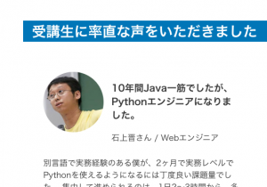
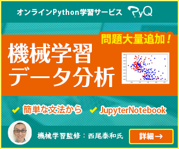

今 人工知能・AI がブームになっています。エンジニアの間でもまた「機械学習」や「データ分析」方面の技術が注目されています。そして、言語としては Python が使われます。今、Pythonで機械学習をする仕事は増えてきています。
この時代の流れで、今後「データ分析」や「機械学習」を仕事とするWeb系出身のエンジニアは増えてくると思われます。Javaを使ってWebのプログラミングをしていたプログラマーが突然「Pythonでデータ分析をやってくれ！」「このCNNを使ったプログラムを解析してレポートを出してくれ」というように言われる日はもう訪れています。
実は、僕がそうでした。
僕は昨年12月に BeProud に入社するまでは、Javaの仕事を10年以上していました。昨年の9月まで Python を書いたことがなかったので、Python歴1年のひよっ子です。そんな僕が、なぜか入社以来、大小案件に関わらせてもらい、今では社内でも「機械学習系に詳しい人」のように見なされているようです。
このような事例は珍しいことではなくなるはずです。 次は、あなたかもしれません！ そんなあなたのために、僕が一年間どのようにして、Pythonと機械学習と付き合ってきたのか、これから、Web系の人が機械学習の仕事に携わる時にどんな心構えをしていれば良いかを書こうと思います。
Javaやの僕はどのようにしてPythonを学習したか
「御社の募集要項を見ると Python という部分以外には一致しているように思います」
「弊社に入社する人の半数は業務での Python は未経験だから大丈夫です」
と、shacho に言われて、入社が決まったものの、そもそも「業務でのPython経験」がないどころか「1行もPythonを書いたことがない」に等しい僕が、初出社日までの2ヶ月間で 「Python のプロ」として出来上がっていないとまずいので、実は焦りました。そこで最初は本を読みました。
例えばこれとか
これとか
でも、読んでも書ける気になりません。「やばい！！」となったところで、なんと絶妙なタイミングでこれから入社する会社がこのサービスを出していました。
PyQ - 本気でプログラミングを学びたいあなたへ
そこからはひたすらPyQをやってなんとか入社までに基本的な文法はマスターしました！そのおかげで「受講生の声」の欄のトップに載ってしまいましたｗ

自社のサービスなので、宣伝臭いと言われそうですが、本当にPyQを使って覚えたスキルで実務で戦っているので、人に聞かれたらまず第一にオススメしています。これからPythonを学ぶ人はこの本を買うと3日間無料でPyQが使えるキャンペーンコードが付いているので、良いかもしれません。
エディタは Eclipse 時々 VSCode 時々 Atom , etc...
Javaは、Eclipse、NetBeans、IntelliJ IDEAのどれかを使用している人がほとんどですが、Pythonは様々なエディタを愛用している人がいるようです。Java出身の人は何を使えばいいでしょうか。
僕はEclipseを使っています。「PyDevなんて重いし使ってる人いないよ」と言われがちです。多分BP社内でもEclipseを愛用しているのは僕だけです。
EclipseがPythonの人たちに人気がないのは「重い」というのがあると思います。しかし、これは誤解で、みんなきっと「Java EE」版を使っているのではないかと思います。Java EE版EclipseはJavaプログラマーも敬遠したくなるほど重いのです。オススメなのが、PHP版のEclipseです。PHP版Eclipseは軽い上、しかもHTMLエディタなど、Web開発に必要なプラグインが最初から入っています。
とはいえ、僕はJava時代にEclipseに心酔してしまって、何度も寄付しているEclipseファンなので、普通に「Eclipseを使わされていた」くらいの人だったら、PyCharmは人気があるし良い選択肢だと思います。
その他には、VSCodeも人気があるようです。
Webやの僕はどのようにして機械学習を学んだか
機械学習の「き」の字も知らなかった中で、「データ分析系の案件に入ってもらうかもしれないから勉強してください。」みたいに言われ、入社前から社内勉強会に参加させてもらいました。その時読んだのがこの本
この本は何度も読み込んだのでバイブル的な存在ですが、pandas も Jupyter Notebook も何それ食えるのというレベルだと、ソースコードを「写経」することもままならないので、きつかったです。最初は、 Jupyter Notebookとpandasから入門することをオススメします。今、Jupyter Notebookとpandasを最初に入門するなら。。。やはりPyQがおすすめです。ｗｗ

PyQには、データ分析・pandasのコンテンツがあります。また、機械学習のコンテンツもあるので、まずはここで、「ロジスティック回帰」や「決定木」などの簡単な使い方を学んでから、専門的な本に進むことをオススメします！
いいなー。今から学ぶ人。
Webで経験した人が機械学習の世界で活躍するには
さて、ここからが本題です。
僕のような根っからのJavaやさんで、Webやさんが、「Pythonで機械学習」の仕事をやって足手まといではなかったのでしょうか？それが意外と活躍できてしまいました。
なぜかというと「機械学習」の現場で「エンジニア」の我々は、「データサイエンティスト」と呼ばれる人たちとは違う役割を期待されるからです。
主に、我々が作るのは「データパイプライン」という部分です。
パイプラインとは、細かいデータの操作を束ねた一連の処理セットのことです。機械学習で求める結果を得るためには、「機械学習アルゴリズム」だけを知っていても十分ではありません。データはSQLで取ってこなければいけないかもしれないし、結果はCSVを変形しなければならないかもしれません。
こういった、一連のデータの流れを設計できるのは、実は、業務フローや、データ設計をどっぷり経験してきた、エンタープライズシステムよろしくな、システム業界のエンジニアです！
入社して最初にやったことは、「機械学習に入力するデータ」をお客さんの「データベースからどのようなSQLで取ってくるか」という設計でした。「susumuisさんSQL得意なので助かります！」と隣の人に言われました。
「機械学習のアルゴリズム」の部分は、ライブラリもあるし「データサイエンティスト」の方が数式を提供してくれるので、基本的なアルゴリズムの名前と特性くらいを知っていれば何とかなります。
それよりも、どのデータを、いつ、どうやって取ってくるのか。あるいは、運用時に誰が、いつ、入れるのか、こういったワークフローや業務フローを設計するのはまさに「システムエンジニア」の得意技です。
どんなエンジニアになってはいけないか
勉強をやめてはいけません。
Webの世界でもいましたが、前時代にはエンジニアでも「今時の技術が全く分からなくて、前時代のノリで設計をして実装させようとする上司」がいたらうんざりです。
特に、機械学習の世界では、お客さんとデータサイエンティストのパイプ役にエンジニアが回りがちになります。その間に伝言ゲームの齟齬があると、連携プレーは崩壊します。データサイエンティストと、お客さん両方の言葉を理解し、それをシステムに落とし込むことができるエンジニア以外は居場所がありません。
これは一般論ですが、「伝言ゲーム」は多くなるほど失敗します。とりわけ「専門用語」が多い機械学習の分野で、伝言ゲームに失敗すると悲劇しか起こりません。そのため、エンジニアはフルスタック的であるべきで、設計から実装まで一貫して一人でできた方が良いでしょう。また、旧来型SIerの多重請負方式では、中間に多くの「専門家ではない人」が挟まるため、うまくいかないのではないかと思っています。
まとめ
以上のように、僕のように他言語、他分野から入って、機械学習界隈でも生きていくのに必要なことは次の4つです。
- データ設計能力とSQL
- お客さんと直接話せして設計から実装まで一貫してできるスキル
- Pythonのスキル
- 機械学習の基礎知識
いかがでしたでしょうか。普通の真面目なエンジニアは、1,2ができて当然なので、あとは 3,4 を学べば、もう明日から機械学習の現場に行っても問題ないはずです！
1,2 が未熟である場合は、Webエンジニアでも、業務システムエンジニアでも、いずれ限界が来ると思います。もし、大規模チームの「一担当」に落ち着いているなら、危機感を覚えた方が良いかもしれません。
3,4 は奇しくも PyQ で学べます！ 自社のサービスなのでこれでは「ちょっとステマが過ぎるのではないか」と思われてしまうことだけが心配ですが、思っていることに間違いはないので、結論として締めくくらせていただきます。


{kind=link}